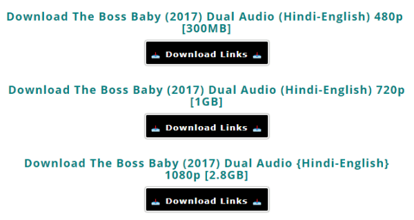

How to download movies from VillaFlix?
Hello my lovely die-hard fans for movies. Now today I am gonna talk with you about how to download movies from VillaFlix.Today I will tell about the most trushted website for movies downloading. And u may not even heard about this site unless u are searching for your yet another movie and u cant seem to find it then u may have once in a while surely stumbled upon VillaFlix but if u didn't then today is the day that u get to know about the most trusted and safe website for movies downloading.
VillaFlix: Introduction
VillaFlix is a site where u can download the movies of every kind, whether it is 300mb movies, Bollywood movies, Hollywood Movies, multi-audio movies, Netflix series, Hindi-Dubbed movies, etc by high-speed download links and that link is non-other that google drive links. Movies are in 480p qualities, 720p qualities, and 1080p qualities.
How to download movies from VillaFlix?
Step 01: Write down the movie name which u want to download.
Step 02: Open your movie by clicking on the poster of it.
Step 03: After that choose your format in which you want to download your movie.
Step 04: Now a new tab will open in which linkvertise.net will come up. You have to click on I am not a robot then click on activate notifications and when the popup appears u can simply click on block. Then second thing u need to do is u need to click on Discover Articles and then another windows will come up and there u have to wait for like 15 seconds then u can close it after doing all that click on continue. Then u have to wait for another 10 to 15 seconds then the continue to download page button will appear.
Step 05: Now you will be redirected to another page where u will be able to download your desired movie.